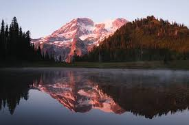

JPG Example
Behold the JPG!!!
Join Photographic Experts Group (JPG or JPEG): This is one of the most common image formats. PNG is best used for photographs, uses lossy compression (quality can vary depending on storage needs), and uniquely can't be animated or made transparent. I chose this image simply because it was visually appealing and gives me the scenic outdoorsy vibes that I look for in one of my yearly vacations that I leave for next week!